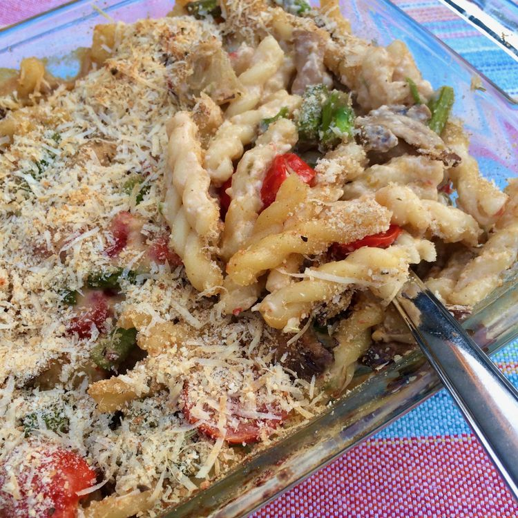

Mushroom Pasta

Take classic Mediterranean flavors and make American-style comfort food for your family! If you are looking for a meatless meal, serve this with a salad and crusty bread. If your family prefers a protein, a rotisserie chicken or a slice of ham would be an easy and tasty addition to the lovely flavors of this casserole.
Ingredients
- 1/2 package gemelli pasta
- 2 tablespoon olive oil
- 1 medium onion, chopped
- 2 stalks celery, chopped
- 2 cups cherry tomatoes, halved
Steps
- Preheat the oven to 350 degrees F (175 degrees C). Grease a 7x11-inch baking dish.
- Bring a large pot of lightly salted water to a boil; cook gemelli at a boil until flexible but still firm to the bite, about 6 minutes.
- Meanwhile, heat oil in a large skillet over medium heat until shimmering. Add onion and stir for 2 minutes.
- Add tomatoes, garlic, red pepper flakes, salt, and pepper. Continue cooking for about 4 minutes, stirring occasionally.
- Pour the vegetable mixture into a large mixing bowl. Drain pasta and stir into the bowl.